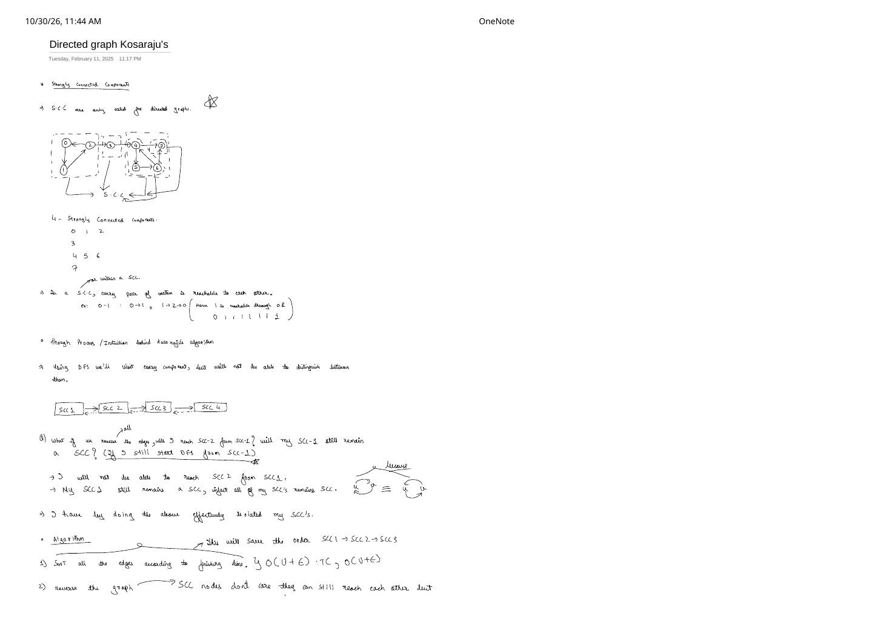
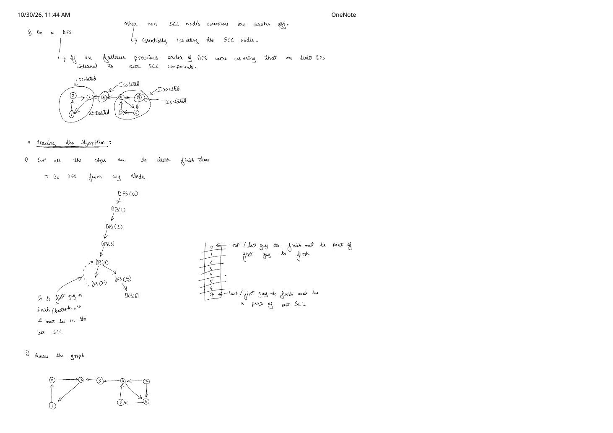
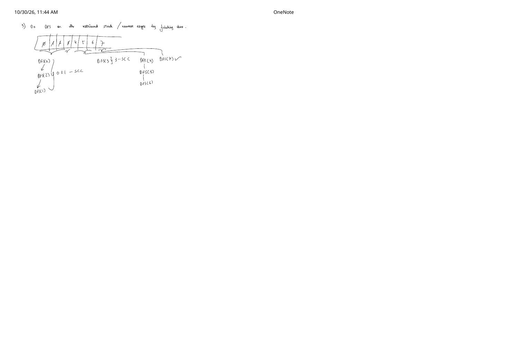

Kosaraju's Algorithm: Strongly Connected Components in Directed Graphs
Expanded from handwritten competitive coding study notes (02_Directed_graph_Kosaraju_s.pdf, pages 1–3)
In an undirected graph, connectivity is symmetric: if $u$ reaches $v$, $v$ automatically reaches $u$. In a directed graph, one-way edges break symmetry — $u \leadsto v$ says nothing about whether $v$ can get back to $u$. Partitioning a directed graph into maximal mutually-reachable clusters gives its Strongly Connected Components (SCCs), and Kosaraju's algorithm finds all of them in a remarkably clean 3-step $\mathcal{O}(V + E)$ pipeline.
1. What Is a Strongly Connected Component?
Definition: Strongly Connected Component (SCC)
Strongly Connected Components are defined strictly for directed graphs. A maximal vertex subset $C \subseteq V$ is an SCC if for every pair of vertices $u, v \in C$, there exists a directed path $u \leadsto v$ and a directed path $v \leadsto u$.
Note: Every single vertex $x$ reaches itself in $0$ edges ($x \leadsto x$), so a vertex that participates in no directed cycle forms a valid 1-vertex SCC $\{x\}$ on its own.
{0,1,2} and {4,5,6} every pair is mutually reachable (e.g., $0 \to 1$ and $1 \to 2 \to 0$), while one-way edges $2 \to 3$, $3 \to 4$, and $4,6 \to 7$ separate the 4 SCCs.2. Condensation Intuition: Why Reverse All Edges?
If we contract each SCC in our example into a single supernode, the graph simplifies to the acyclic chain:
$$\text{SCC}_1 \;(\{0,1,2\}) \;\longrightarrow\; \text{SCC}_2 \;(\{3\}) \;\longrightarrow\; \text{SCC}_3 \;(\{4,5,6\}) \;\longrightarrow\; \text{SCC}_4 \;(\{7\})$$In general, collapsing every SCC of any directed graph always yields a Directed Acyclic Graph (Condensation DAG) — because if two supernodes had a cycle between them, all of their vertices would be mutually reachable and would have merged into one larger SCC!
Now follow the exact thought experiment from pages 1–2 of the notes:
- Why plain DFS fails: Starting a DFS at vertex $0$ visits $\{0, 1, 2\}$, then crosses $2 \to 3$, then $3 \to 4 \to 5 \to 6 \to 7$, sweeping all $8$ nodes in one connected tree without telling us where $\text{SCC}_1$ ended and $\text{SCC}_2$ began.
- What happens when we reverse every edge ($G \to G^T$)?
- Inside each SCC, nothing breaks! Reversing $0 \to 1 \to 2 \to 0$ gives $0 \leftarrow 1 \leftarrow 2 \leftarrow 0$, which is still a directed cycle over $\{0, 1, 2\}$. Every SCC of $G$ is identical as a vertex set to an SCC of $G^T$.
- Between SCCs, every one-way bridge flips backward: $\text{SCC}_1 \longleftarrow \text{SCC}_2 \longleftarrow \text{SCC}_3 \longleftarrow \text{SCC}_4$.
- Isolating components one by one: If we now start a DFS from $0 \in \text{SCC}_1$ on the reversed graph $G^T$, it visits $\{0, 2, 1\}$ and hits a dead end because $2 \leftarrow 3$ points inward! Next, starting from $3 \in \text{SCC}_2$, the reversed edge $3 \to 2$ leads into already-visited $\text{SCC}_1$, so $3$ stops immediately! Each DFS call peels off one exact SCC.
3. Why Sorting by Finish Time Finds the Right Order
There is one crucial catch: isolation on $G^T$ only works if we start DFS in $\text{SCC}_1$ before $\text{SCC}_2$ before $\text{SCC}_3$ before $\text{SCC}_4$! (If we mistakenly started on $G^T$ from vertex $7 \in \text{SCC}_4$, reversed edges $7 \to 4 \to 3 \to 2 \to 0$ would spill across the whole graph again!) Since we don't know the SCCs ahead of time, how do we find a vertex in a source SCC?
Finish-Time Ordering Theorem
Run a standard DFS across $G$ (from arbitrary starting vertices) and push each vertex onto a stack at the moment its DFS finishes (post-order backtrack). If there is a directed edge $\text{SCC}_A \to \text{SCC}_B$ in $G$, then:
$$\max_{u \in \text{SCC}_A} \text{finish}[u] \;\gt\; \max_{v \in \text{SCC}_B} \text{finish}[v]$$- Case 1 ($\text{SCC}_A$ entered before $\text{SCC}_B$): Let $a \in \text{SCC}_A$ be the first vertex entered. Every vertex in $\text{SCC}_B$ is reachable from $a$, so all of $\text{SCC}_B$ becomes a descendant of $a$ and must finish before $a$ backtracks!
- Case 2 ($\text{SCC}_B$ entered before $\text{SCC}_A$): Because the Condensation DAG has no path $\text{SCC}_B \leadsto \text{SCC}_A$, the DFS inside $\text{SCC}_B$ cannot reach $\text{SCC}_A$ at all — so every vertex in $\text{SCC}_B$ finishes completely before any vertex in $\text{SCC}_A$ is even discovered!
Consequently, the vertex at the very top of the finish-time stack is guaranteed to belong to a source SCC of $G$ (which is a sink SCC of $G^T$)!
4. Complete 3-Step Trace on the 8-Vertex Graph (Pages 2–3)
0):DFS(0) → DFS(1) → DFS(2) → DFS(3) → DFS(4):• Branch
4 → 7: 7 has no outgoing edges $\implies$ 7 finishes 1st (pushed to bottom of stack).• Branch
4 → 5 → 6: neighbors 4 (visited) and 7 (visited) $\implies$ 6 finishes, then 5, then 4, then 3, then 2, then 1, and 0 finishes last!Stack (top $\to$ bottom):
[0, 1, 2, 3, 4, 5, 6, 7]
0→2, 2→1, 1→0, 3→2, 4→3, 4→6, 6→5, 5→4, 7→4, 7→6
| Popped Node | Visited? | DFS Traversal on Reversed Graph $G^T$ | Extracted SCC |
|---|---|---|---|
0 | No | 0 → 2 → 1 (edge 3→2 cannot be traversed backward from 2!) | {0, 2, 1} |
1, 2 | Yes | Skipped | — |
3 | No | 3 → 2 (already visited!) | {3} |
4 | No | 4 → 3 (visited), 4 → 6 → 5 (edges from 7 point inward!) | {4, 6, 5} |
5, 6 | Yes | Skipped | — |
7 | No | 7 → 4 (visited), 7 → 6 (visited) | {7} |
5. Complete 3-Step $\mathcal{O}(V + E)$ Implementation (C++ & Python)
#include <bits/stdc++.h>
using namespace std;
class Solution {
private:
void dfsFinishOrder(int node, const vector<vector<int>>& adj,
vector<int>& vis, stack<int>& st) {
vis[node] = 1;
for (int it : adj[node]) {
if (!vis[it]) {
dfsFinishOrder(it, adj, vis, st);
}
}
st.push(node); // push AFTER all descendants finish
}
void dfsReversed(int node, const vector<vector<int>>& adjT,
vector<int>& vis, vector<int>& component) {
vis[node] = 1;
component.push_back(node);
for (int it : adjT[node]) {
if (!vis[it]) {
dfsReversed(it, adjT, vis, component);
}
}
}
public:
// Returns all Strongly Connected Components in topological order of the Condensation DAG
vector<vector<int>> kosarajuSCC(int V, const vector<vector<int>>& adj) {
// Step 1: Order vertices by decreasing finish time
vector<int> vis(V, 0);
stack<int> st;
for (int i = 0; i < V; i++) {
if (!vis[i]) {
dfsFinishOrder(i, adj, vis, st);
}
}
// Step 2: Build transposed graph adjT (reverse every directed edge u -> v to v -> u)
vector<vector<int>> adjT(V);
for (int u = 0; u < V; u++) {
vis[u] = 0; // reset visited array for Step 3
for (int v : adj[u]) {
adjT[v].push_back(u);
}
}
// Step 3: Pop stack and run DFS on adjT; each tree is one isolated SCC
vector<vector<int>> sccs;
while (!st.empty()) {
int node = st.top();
st.pop();
if (!vis[node]) {
vector<int> component;
dfsReversed(node, adjT, vis, component);
sccs.push_back(move(component));
}
}
return sccs;
}
};import sys
sys.setrecursionlimit(200_000)
def kosaraju_scc(V: int, adj: list[list[int]]) -> list[list[int]]:
vis = [False] * V
order: list[int] = []
def dfs1(u: int) -> None:
vis[u] = True
for v in adj[u]:
if not vis[v]:
dfs1(v)
order.append(u)
for i in range(V):
if not vis[i]:
dfs1(i)
adj_rev = [[] for _ in range(V)]
for u in range(V):
for v in adj[u]:
adj_rev[v].append(u)
vis = [False] * V
sccs: list[list[int]] = []
def dfs2(u: int, comp: list[int]) -> None:
vis[u] = True
comp.append(u)
for v in adj_rev[u]:
if not vis[v]:
dfs2(v, comp)
for u in reversed(order):
if not vis[u]:
comp: list[int] = []
dfs2(u, comp)
sccs.append(comp)
return sccsComplexity Analysis
- Time Complexity: $\mathcal{O}(V + E)$ — Pass 1 DFS ($\mathcal{O}(V + E)$) + Graph Transposition ($\mathcal{O}(V + E)$) + Pass 2 DFS ($\mathcal{O}(V + E)$) $= 3 \cdot \mathcal{O}(V + E) = \mathcal{O}(V + E)$.
- Space Complexity: $\mathcal{O}(V + E)$ to store the transposed adjacency list
adjT, plus $\mathcal{O}(V)$ forvis[],stack, and recursion stack.
From the Handwritten Notes
Expand the original handwritten pages below to inspect the exact derivations, dry runs, and annotations:
View original note — Kosaraju Page 1: 8-vertex SCC example, condensation chain & edge-reversal idea


02_Directed_graph_Kosaraju_s.pdf: 8-node example with 4 SCCs, condensation thought experiment, and why reversing edges isolates components.View original note — Kosaraju Page 2: Isolated components diagram, finish-time DFS tree & stack


02_Directed_graph_Kosaraju_s.pdf: Tracing Step 1 finish-time stack (0 at top, 7 at bottom) and Step 2 reversed graph.View original note — Kosaraju Page 3: Step 3 stack pops extracting all 4 SCCs


02_Directed_graph_Kosaraju_s.pdf: Popping [0,1,2,3,4,5,6,7] on $G^T$ to recover {0,2,1}, {3}, {4,5,6}, and {7}.